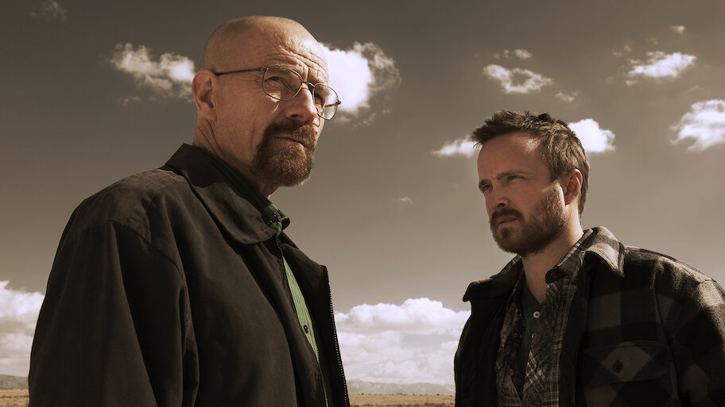
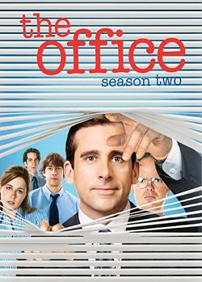
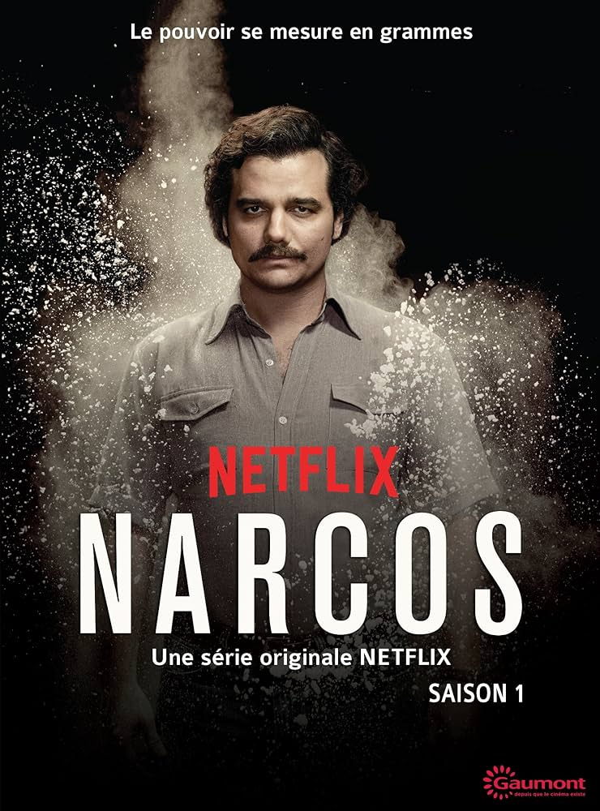
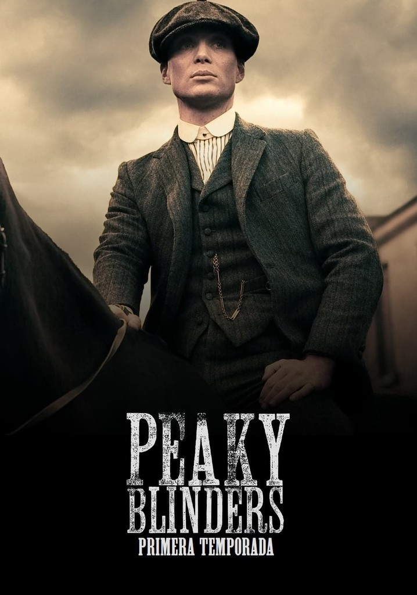
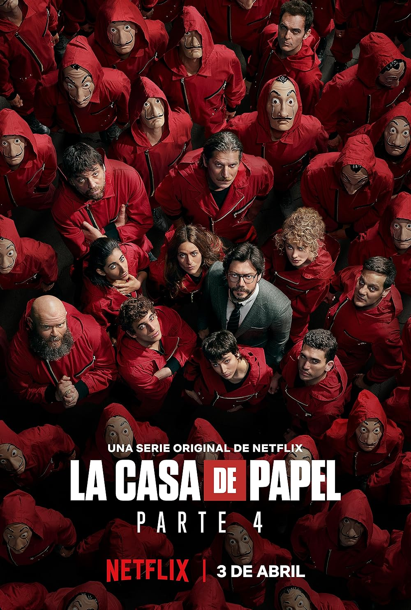
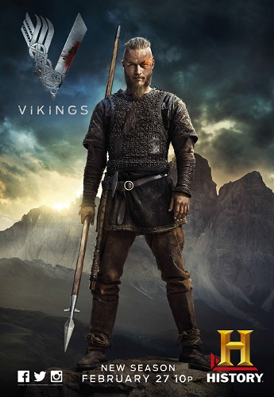
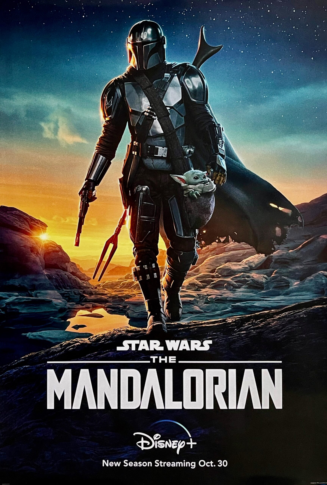

Breaking Bad
Me gusta porque muestra cómo una persona común puede transformarse completamente bajo presión.

Game of Thrones
Me atrae por su historia épica, personajes complejos y giros inesperados.

Stranger Things
Me gusta por su mezcla de misterio, nostalgia de los 80 y amistad verdadera.

The Office
Su humor sencillo y personajes carismáticos me hacen reír siempre.

Dark
La complejidad de los viajes en el tiempo y el misterio me engancharon mucho.

Narcos
Me gusta porque retrata la historia de Colombia y el narcotráfico con gran realismo.

Peaky Blinders
Los personajes y el estilo visual son muy impactantes y únicos.

La Casa de Papel
Me gustan sus giros, tensión constante y la idea de un plan perfecto.

Vikings
La historia de los vikingos y su cultura me resulta fascinante.

The Mandalorian
Me gusta porque combina acción, aventura y el universo de Star Wars que adoro.